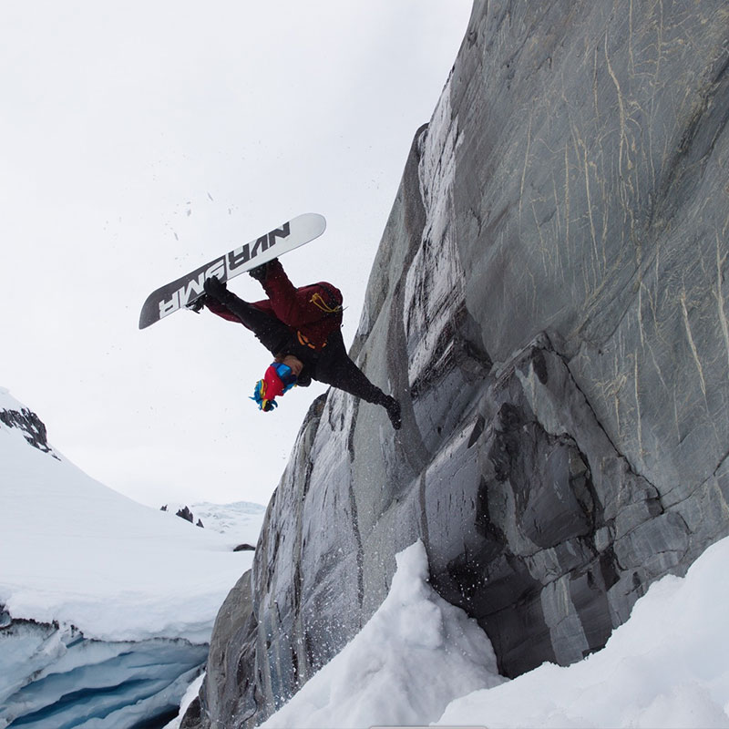

<div id="content">
  <div id="main">
    <div class="container">
      <div class="one_third">
        
      </div>

     <div class="two_third last">
						<h1>Everette Simmons</h1>
						<p>
                <strong>MEET EVERETTE... </strong>Originally from Portland, Oregon but spent most of my childhood on the Colorado Front Range. I'll take pow and exploration over anything but I still have a love for the streets and park laps with friends
            </p>
						<p>
                <strong>EVERETTE'S FAVORITE NS BOARD IS... </strong><span>The Ripsaw. I ride the 162 Ripsaw because it can handle anything and everything. The slight rocker between the feet floats in pow and the enhanced camber of the Ripsaw Profile stomps jumps and provides incredible stability at high speeds. The aggressive sidecut is very responsive even in the deep stuff.</span>
						</p>
					</div>
      <hr>
  </div>
</div>